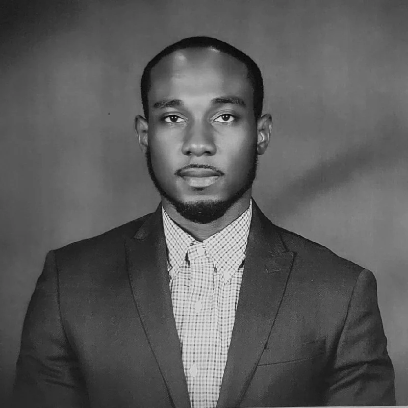

SOFTWARE DEVELOPER · DALLAS–FORT WORTH
Good design.
Useful software.
Built with care.
I’m Moubarak Akamou. I turn ideas into thoughtful web experiences, combining a creative eye with hands-on development.

01 / SELECTED WORK
Built to be used.
Designed to be remembered.
A closer look at applications and websites I’ve worked on.
02 / MORE TO EXPLORE
The project collection.
Business websites, photography portfolios, and interactive experiments.
03 / WHAT’S NEXT
Currently building.
New ideas, deeper technical challenges, and room to grow.
04 / A LITTLE ABOUT ME
A creative eye.
A builder’s mindset.
I enjoy connecting what a product needs to do with how it should feel to use.
I’m a developer based in Dallas–Fort Worth, working across web interfaces, applications, and business websites. Through Vertex Studio, I bring a design-focused approach to the work I create.
My projects span food, photography, transportation, education, and productivity. I’m also developing my Linux, Docker, and cloud skills through hands-on practice and MediaVertex One.
05 / LET’S CONNECT